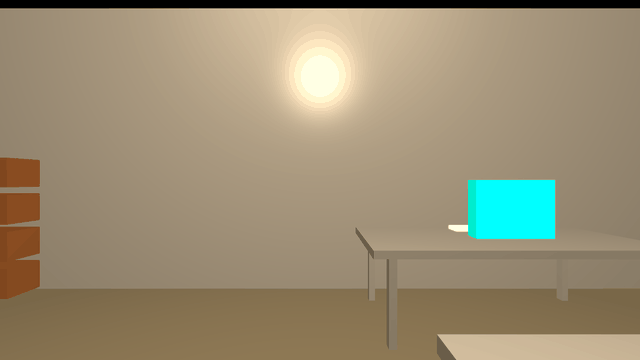
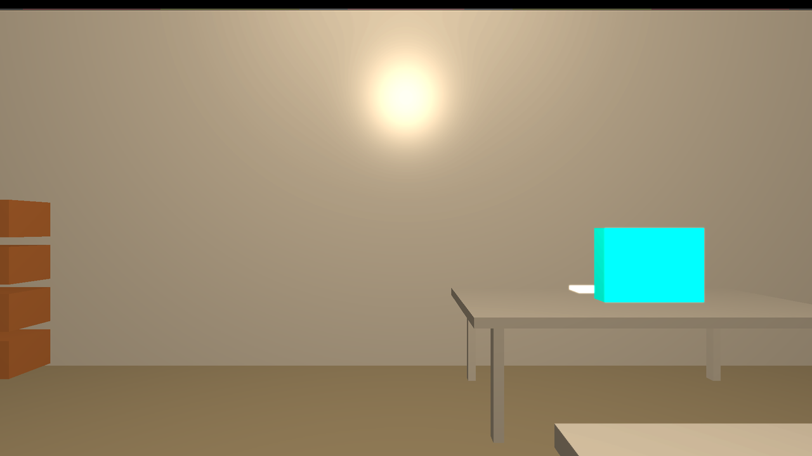
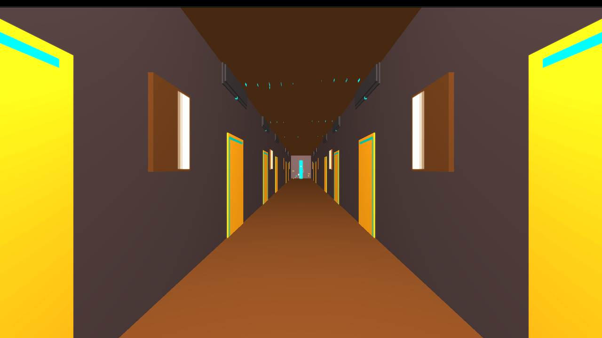
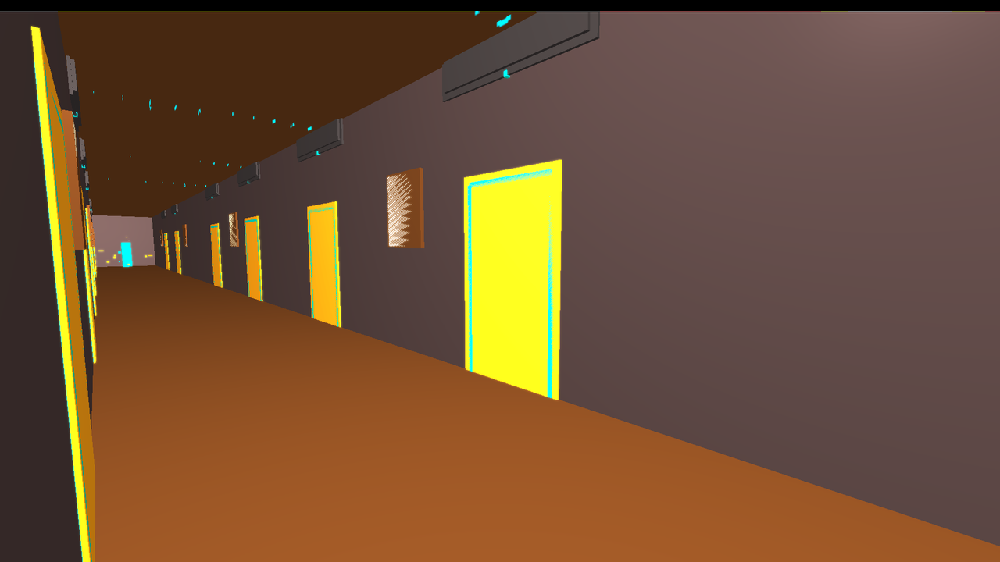
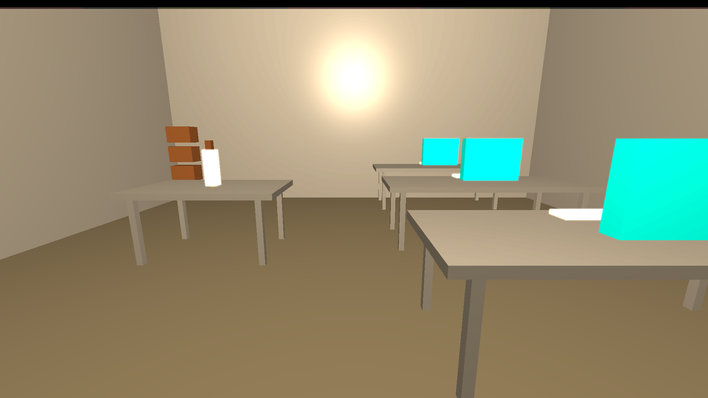

A Doom-style 3D explorer for your GitHub account. Every door is a real repo, every book a real file — and two small language models live in the walls. This page is the static tour; the real thing runs locally.

11 real E2E waypoints captured from the running game (verification artifacts, not mockups).




--demo: a full 12-room fixture palace, zero auth, zero network. No GitHub account needed.Fully local: your code, your GPU, your Ollama models. No cloud, no telemetry. Nothing lives forever, nothing runs for free, always advancing.